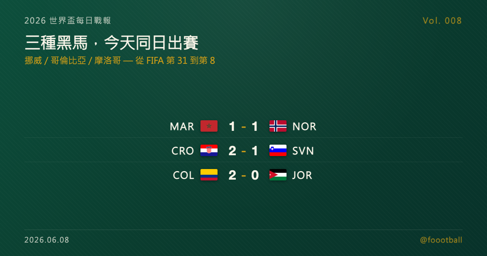

三種黑馬，今天同日出賽：挪威、哥倫比亞、摩洛哥的爆冷劇本
常被點名的三支黑馬候選挪威、哥倫比亞、摩洛哥，今天剛好都踢了熱身賽——但他們是三種不同類型的黑馬：挪威 FIFA 僅第 31、睽違 28 年回歸；哥倫比亞第 13、南美實力派；摩洛哥已是第 8、上屆四強的『黑馬天花板』。

2026 世界盃每日戰報 Vol. 008
§1 即時比分戰報
開幕在即，6/7 是相對安靜的賽前熱身日，競技面沒有大比分或冷門爆點。本篇聚焦其中 4 場與世界盃黑馬敘事相關的熱身賽——當天上場的隊伍裡，藏著本屆最常被點名的三支黑馬候選：摩洛哥、挪威、哥倫比亞，正好是 §4 今天要談的主角。比較沉重的一刻發生在歐登塞：丹麥對烏克蘭一戰因艾力臣（Christian Eriksen）場上倒地而中止。以下為這 4 場：
| 賽事 | 比分 | 場館 | 焦點 |
|---|---|---|---|
| 🇲🇦 摩洛哥 — 🇳🇴 挪威 | 1 - 1 | 哈里森 Sports Illustrated Stadium（原 Red Bull Arena） | Brahim Díaz 8' 先開紀錄、Ødegaard 76' 替挪威扳平，兩支黑馬互探 |
| 🇭🇷 克羅埃西亞 — 🇸🇮 斯洛維尼亞 | 2 - 1 | 瓦拉日丁 Anđelko Herjavec | Modrić 51' 先進、Pašalić 補時 93' 絕殺逆轉；Šporar 83'（斯） |
| 🇨🇴 哥倫比亞 — 🇯🇴 約旦 | 2 - 0 | 聖地牙哥 Snapdragon Stadium | Jhon Arias 40'、54' 梅開二度，賽前完美收官 |
| 🇩🇰 丹麥 — 🇺🇦 烏克蘭 | 中止 | 歐登塞 Nature Energy Park | 約 64' 艾力臣場上倒地，賽事中止；送醫時意識清醒、情況穩定 |
當天另有義大利 1-0 希臘（義大利 10 人應戰）、厄瓜多 3-0 瓜地馬拉等多場友誼賽；整體屬純熱身性質，重點不在比分，而在這三支黑馬的世界盃定位——詳見 §2、§4。
§2 排行榜區：三支黑馬，其實是三種黑馬
「黑馬」其實不是同一回事。用賽前最後一份 FIFA 排名（2026/4 版，下一版約 6/11 開幕週更新）對照分組，三支今天出賽的黑馬剛好排成一條光譜：
| 隊伍 | FIFA 排名 | 分組 | 黑馬定位 |
|---|---|---|---|
| 🇳🇴 挪威 | 第 31 | I 組（法國、塞內加爾、伊拉克） | 睽違 28 年回歸，落差最大的純黑馬 |
| 🇨🇴 哥倫比亞 | 第 13 | K 組（葡萄牙、剛果民主共和國、烏茲別克） | 南美實力派，被低估的第二集團 |
| 🇲🇦 摩洛哥 | 第 8 | C 組（巴西、蘇格蘭、海地） | 上屆四強，已是「黑馬天花板」 |
排名第 8 的摩洛哥嚴格說已經不算黑馬，而第 31 的挪威才是典型的「實力與期待值落差最大」那一型。同一個詞，三種類型——這正是 §4 想拆開談的。
§3 賽事摘要
- 摩洛哥 1-1 挪威：兩支黑馬在美國互探底細，Brahim Díaz（摩洛哥）第 8 分鐘先馳得點，挪威隊長 Ødegaard 第 76 分鐘扳平，最終握手言和。
- 克羅埃西亞 2-1 斯洛維尼亞：40 歲的 Modrić 第 51 分鐘破門，斯洛維尼亞由 Šporar 第 83 分鐘扳平，但 Pašalić 補時第 93 分鐘絕殺，克羅埃西亞以一場逆轉勝替世界盃前最後一戰收尾。
- 哥倫比亞 2-0 約旦：Jhon Arias 上下半場各入一球、梅開二度，哥倫比亞輕取首航世界盃的約旦，帶著信心進入大賽。
- 丹麥 vs 烏克蘭（中止）：比賽進行到約第 64 分鐘，丹麥中場艾力臣場上倒地，賽事隨即宣告中止。據賽後消息，艾力臣送醫時意識清醒、情況穩定——這一幕讓人想起 2021 年歐國盃，所幸最新消息是好的。
§4 焦點觀察｜三種黑馬，三種「爆冷」的劇本
6/7 是賽前安靜的一天，本篇聚焦的 4 場熱身賽沒有大比分。但如果把鏡頭拉遠，當天上場的隊伍裡其實同時出現了本屆三支最常被討論的黑馬——挪威、哥倫比亞、摩洛哥。有趣的是，這三個名字常被放在同一句話裡，但他們根本不是同一種黑馬。「黑馬」說穿了，是實力與外界期待之間的落差；落差越大、越意外，才越像黑馬。而這三隊，剛好把這個落差從大到小排成一條光譜。
第一種：挪威——落差最大的那一型。 挪威此刻 FIFA 排名僅第 31，卻是最多人「怕」的一隊，原因很簡單：陣容和排名嚴重不對稱。前場有當今世界最致命的射手 Haaland，中場有 Real Madrid 的指揮官 Ødegaard，邊路還有 Nusa 這樣的快馬——這是一套放進任何強權都不違和的中軸。更關鍵的是他們的回歸本身就是個故事：挪威自 1998 年後就再沒踢過世界盃，睽違 28 年才重返決賽圈，對 Haaland、Ødegaard 這一代而言，2026 是他們生涯的第一屆世界盃。外圍賽他們 8 戰全勝、攻進 37 球（全歐洲最多），用一種近乎輾壓的方式拿到門票。今天對摩洛哥 1-1，正是隊長 Ødegaard 在第 76 分鐘扳平——這種「關鍵時刻有人站出來」的能力，恰恰是黑馬走遠的必要條件。
挪威的問題也很明確：大賽經驗是零。 他們被分在堪稱死亡之組的 I 組，同組有 2018 世界盃冠軍法國、非洲勁旅塞內加爾，外加首航的伊拉克。一支 28 年沒踢過世界盃的隊伍，第一仗就要面對這種強度，紙面實力再漂亮，臨場能不能兌現是另一回事。這也是為什麼挪威是三隊裡最「黑」的——期待值與實力的落差最大，爆冷的空間也最大。
第二種：哥倫比亞——被低估的實力派。 如果說挪威是還沒被驗證的潛力股，哥倫比亞就是被市場低估的成熟股。他們 FIFA 排名第 13，在南美區外圍賽以第三名晉級，積 28 分、靠得失球力壓烏拉圭與巴西——能在這個全世界最硬的資格賽區擠進前段，本身就是實力證明。隊長是 James Rodríguez：2014 世界盃金靴得主（單屆 6 球），當年帶哥倫比亞首次闖進八強的那個人；如今搭配 Luis Díaz 這條鋒線，攻擊火力不容小覷。今天 2-0 擊敗約旦、Jhon Arias 梅開二度，正是這套陣容狀態的縮影。
哥倫比亞被分在 K 組，同組有葡萄牙、剛果民主共和國與烏茲別克。葡萄牙是公認的小組第一熱門，但哥倫比亞普遍被視為穩出線的第二位——Opta 的模擬甚至給了他們約 84.9% 的晉級機率。換句話說，哥倫比亞的「爆冷」不會發生在小組賽，而會發生在淘汰賽：當一支被當成黑馬、實則第 13 名的球隊撞上傳統強權時，那才是真正的考驗，也是他們最可能掀翻誰的時刻。
第三種：摩洛哥——已經把落差補平的「黑馬天花板」。 嚴格講，摩洛哥今天已經不算黑馬了。他們 FIFA 排名高居第 8，是三隊裡最高的；而真正讓「黑馬」這個標籤對他們失效的，是 2022 卡達世界盃——那一屆他們一路殺進四強，成為史上第一支闖進世界盃四強的非洲與阿拉伯國家。當你做過一次四強，外界對你的期待就回不去了。
所以摩洛哥的角色，反而是另外兩隊的參照系：他們證明了一支「非傳統強權」到底能走多遠。這次他們被分在 C 組，同組是奪冠大熱門巴西，外加蘇格蘭與海地——6/13 首戰就直接對上巴西。對挪威和哥倫比亞來說，摩洛哥是那個「如果順利，四年後我們也想成為的樣子」；對摩洛哥自己來說，2026 的命題已經不是「能不能爆冷」，而是「能不能複製、甚至超越 2022」。這已經是另一個層級的壓力了。
把三隊放在一起看，黑馬其實是一條光譜。 挪威（第 31）落差最大、最像黑馬、爆冷空間也最大，但最未經驗證；哥倫比亞（第 13）居中，實力被低估、最可能在淘汰賽掀翻強權；摩洛哥（第 8）則已經把落差補平，從黑馬升格成被期待的一方。今天他們剛好同日出賽，把這條光譜整整齊齊排了出來。倒數第 3 天，與其問「今年誰會爆冷」，不如先想清楚：你說的黑馬，是哪一種黑馬？
常見問題
為什麼說挪威是 2026 世界盃最大黑馬？
因為他們陣容與排名落差最大。挪威 FIFA 僅第 31，卻擁有 Haaland、Ødegaard 等世界級球員，外圍賽 8 戰全勝、進 37 球居全歐之冠。加上睽違 28 年（1998 後首次）才重返世界盃，潛力高但大賽經驗為零，因此被視為「實力被排名嚴重低估」的典型黑馬。
哥倫比亞是怎麼晉級 2026 世界盃的？
透過南美區（CONMEBOL）外圍賽。哥倫比亞以第三名晉級，18 戰積 28 分，靠得失球差壓過烏拉圭與巴西。球隊由 2014 世界盃金靴 James Rodríguez 領軍，FIFA 排名第 13，被分在 K 組（葡萄牙、剛果民主共和國、烏茲別克）。
摩洛哥還算黑馬嗎？
嚴格說已經不算。摩洛哥 FIFA 排名第 8，且在 2022 卡達世界盃打進四強，成為史上首支闖進四強的非洲與阿拉伯國家。如今外界對他們的期待已是「能否複製甚至超越 2022」，比較接近被看好的一方，而非傳統意義的黑馬。本屆他們分在 C 組，6/13 首戰即對巴西。
資料來源：FIFA / ESPN / NBC Sports / Sky Sports / Opta / 各國足協 / Wikipedia 等多源交叉驗證（2026-06-07 賽果、2026-04 FIFA 排名、世界盃分組與賽程）。FIFA 排名為當下快照，6/11 開幕週將更新。
§5 明天看點
倒數最後幾天，各隊陸續抵達美加墨、進入賽前集訓與場地適應，預期還有零星熱身賽收尾。本屆世界盃將於 6/11 在墨西哥城揭幕；黑馬們的真正考驗也隨即登場——摩洛哥 6/13 首戰即對巴西、挪威 6/16 首戰碰伊拉克（同組還有法國、塞內加爾）、哥倫比亞 6/17 對烏茲別克。我們會持續更新到開幕與整個賽季。
每日戰報追：https://medium.com/@foootball 賽程訂閱站：https://foootball.twtools.cc/
Tags：世界盃, 2026 世界盃, 黑馬, 挪威, Haaland, 哥倫比亞, 摩洛哥